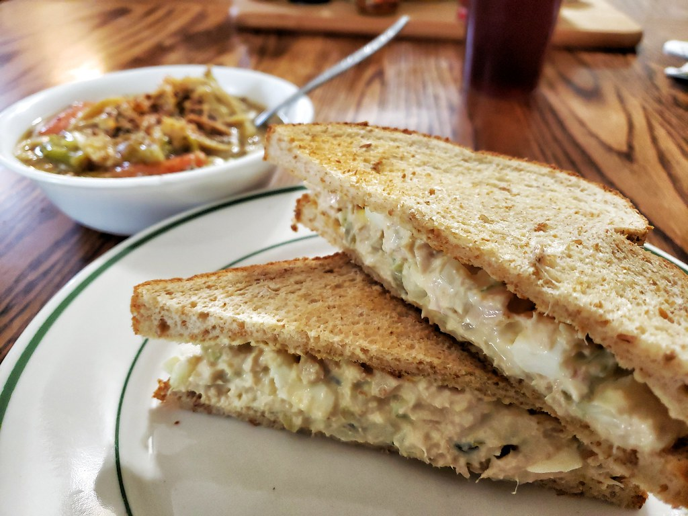

Tuna Sandwich

Description
The chicken of the sea in your hands. Making this easy tuna sandwich will change your life.
If you think peanut butter sandwiches were easy to make, you're right. This is slighty more diffcult.
Ingredients
- Bread
- Tuna
- Mayo
- Choice of vegetables
Steps
- Toast two slices of bread and apply mayo.
- Drain tuna and add to a bowl with mayo.
- Chop vegetables of your choosing and add them to the mix.
- Add more mayo, salt and pepper to taste.
- Spread tuna mix onto the toast and close the sandwich.
- Cut in half and enjoy with a soup!